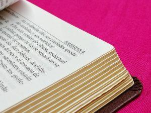

Wielka pomyłka Mateusza?
 Wiele osób sceptycznie nastawionych do Biblii, jako jeden z argumentów swej niewiary w natchnienie Słowa Bożego podaje fragment z Ewangelii Mateusza 27:9-10:
Mt 27:9-10 BW
9. Wtedy się wypełniło, co było powiedziane przez proroka Jeremiasza w słowach: I wzięli trzydzieści srebrników, cenę wyznaczoną za sprzedanego człowieka, jak go oszacowano w Izraelu.
10. I dali je za pole garncarza, jak mi nakazał Pan.
Według nich Mateusz popełnił tutaj błąd przypisując Jeremiaszowi słowa, które zostały zawarte w proroctwie Zachariasza:
Za 11:12-13
12. Wtedy rzekłem do nich: Jeżeli uznacie to za słuszne, dajcie mi należną zapłatę, a jeżeli nie, zaniechajcie! I odważyli mi jako zapłatę trzydzieści srebrników.
13. Lecz Pan rzekł do mnie: Wrzuć je do skarbca, tę wysoką cenę, na jaką mnie oszacowali! Wtedy wziąłem trzydzieści srebrników i wrzuciłem je w świątyni do skarbca.
W oczach niektórych osób słowa zanotowane przez Mateusza albo podważają wiedzę i kompetencje pisarza, albo też autentyczność posiadanej przez nas greckiej wersji Ewangelii jego autorstwa. Czy jednak rzeczywiście problem przedstawiany przez tych krytyków jest nierozwiązywalny? Niekoniecznie.
Proroctwo mówione
Jak łatwo zauważyć proroctwo przytoczone przez Mateusza nie było dokładnym cytatem słów Zachariasza lecz co najwyżej swobodną jej parafrazą. Stąd niektórzy wyciągają wniosek, że wypowiedź zanotowana przez Mateusza była zapisem proroctwa egzystującego nie tyle w wersji pisanej lecz przechowywanej w tradycji ustnej narodu izraelskiego (“…powiedziane przez proroka Jeremiasza…” a nie: “napisane”). Jako przykład tego, że istniały takie przypadki, można podać następujący tekst:
Dz 20:35 (BW)
35. W tym wszystkim pokazałem wam, że tak pracując, należy wspierać słabych i pamiętać na słowa Pana Jezusa, który sam powiedział: Bardziej błogosławioną rzeczą jest dawać aniżeli brać.
Próżno w Biblii szukać powyższych słów Pana Jezusa. Prawdopodobne jest więc, że przetrwały one w pamięci apostołów i uczniów, przekazywane ustnie lecz nie zapisane w żadnej z Ewangelii opisujących życie i działalność Zbawiciela. Podobnie mogło być z wypowiedzianym proroctwem Jeremiasza. Stwierdzenie, że proroctwo zostało wypowiedziane, może informować nas jedynie o tym, iż prorok wyraził je werbalnie.
Ciekawie wypowiada się w sprawie tego proroctwa Augustyn:
“I have lately read in a Hebrew book given me by a Hebrew of the Nazarene sect, an apocryphal Hieremias, in which I find the very words here quoted”1
“Czytałem ostatnio w hebrajskiej księdze danej mi przez pewnego Żyda z sekty Nazarejczyków, apokryf Jeremiasza, w którym znalazłem właśnie te cytowane tutaj słowa”.
Augustyn odnosi się do słów zawartych właśnie w ewangelii Mateusza 27:9,10. Jeśli jest to świadectwo prawdziwe, wówczas mielibyśmy sprawę rozwiązaną. Nie ulega bowiem wątpliwości, że w Piśmie możemy znaleźć cytaty z ksiąg pseudoepigraficznych bądź też nawiązania do Targumów. Takie przytoczenia nie “kanonizują” przy tym owych ksiąg.
Przykładem może być porównanie Listu Judy 1:14,15 z 1 Księgą Henocha 1:9. Słowa wypowiedziane przez Henocha mogły przetrwać w przekazie ustnym i zostać zapisane w pseudoepigraficznej Księdze Henocha. Duch Święty mógł w taki sposób pokierować autorem listu Judy, iż zawarł jedynie wypowiedź z Księgi Henocha, która była autentyczna i do której Bóg się przyznał. Podobna sytuacja mogła mieć miejsce z opisywanym przez nas problemem cytatu Mateusza. Bóg mógł spowodować, że cytat z pseudoepigraficznego Jeremiasza (lub słowa egzystujące do tamtej pory jedynie w ustnej tradycji) znalazł się zapisany w Ewangelii Mateusza.
Jeremiasz jako pierwszy prorok w zwoju
Niektórzy proponują jeszcze inne rozwiązanie. Wśród osób interesujących się Biblią wiadome jest, iż Stary Testament dzielił się w zasadzie na trzy części: Prawo (pięć Ksiąg Mojżeszowych), Prorocy i Pisma . W dniach Jezusa identyfikowano czasami każdą część za pomocą pierwszej księgi znajdującej się w danym zbiorze (czy to w Prawie, Prorokach czy też Pismach). Przykładem to potwierdzającym może być tekst z Łk 24:44, w którym trzecia część ST (Pisma) została zidentyfikowana przez pierwszą księgę tej części – Psalmy.
Łk 24:44 (UBG)
44. Potem powiedział do nich: To są słowa, które mówiłem do was, będąc jeszcze z wami, że musi się wypełnić wszystko, co jest o mnie napisane w Prawie Mojżesza, u Proroków i w Psalmach.
Interesująco w tym kontekście brzmi następujący komentarz Davida Sterna:
Jedną możliwość potwierdzają pewne miejsca w Talmudzie: zwój z Prorokami mógł pierwotnie rozpoczynać się od Jeremiasza (księgi o największej liczbie słów, nie zaś Izajasza, a jeśli tak, to wymieniając Jeremiasza, Mattitjahu mógł mieć na myśli ogólnie Proroków, nie zaś konkretnie jednego2
Jeden z takich fragmentów, o których wspomina David Stern identyfikują Josh McDowell oraz Don Steward. W swej książce “Odpowiedzi na Trudne Pytania”3 zamieszczają informację, że wzmianka o tym znajduje się w traktacie Baba Bathra 14b.
Wydaje się więc, że mamy co najmniej dwa sposoby wyjaśnienia pozornego błędu popełnionego rzekomo przez Mateusza. To sprawia, że nie pozostajemy bezbronni wobec zarzutów osób atakujących natchnienie Biblii. Nikt nie obiecał nam, że interpretacja Słowa będzie prosta i łatwa. Jednak nie powinno nas to zniechęcać.
Ps 12:7 (BW)
7. Słowa Pańskie są słowami czystymi, srebrem przetopionym, odłączonym od ziemi, siedemkroć oczyszczonym.
Przypisy
1 Cytowane ze strony: https://ccel.org/ccel/aquinas/catena1/catena1.ii.xxvii.html?queryID=13117547&resultID=51237
2 David Stern, Komentarz żydowski do Nowego Testamentu, Vocatio, Warszawa 2005, s. 123.
3 Josh McDowell, Don Steward, Odpowiedzi na trudne pytania, TKECh, Kraków 1988, s. 118.
kopia strony: https://thaleia.pl/biblia/wielka-pomylka-mateusza/ Wszelkie prawa autorskie należą się autorowi tej strony
389f7d66c5